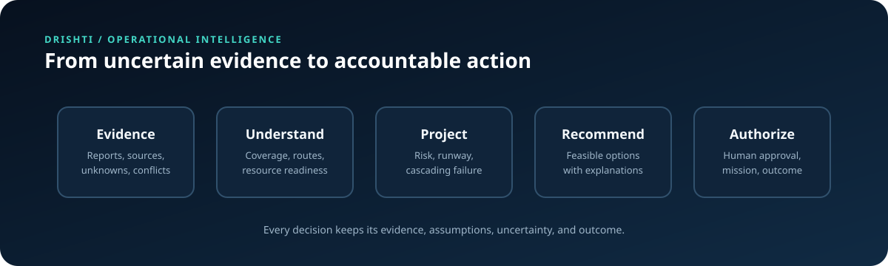

DISASTER INTELLIGENCE & RESPONSEDRISHTI
Disaster Intelligence & Response Platform
- Decision Intelligence: Engineered deterministic recommendation workflows evaluating evidence quality, resource readiness, capability matching, and route constraints for high-stakes missions.
- Geospatial Intelligence: Developed incident-monitoring pipelines to detect unassessed geographic zones and implemented offline command queuing for degraded connectivity.
- Full-Stack Architecture: Built a modern React 19/TypeScript frontend paired with a high-performance FastAPI backend, PostgreSQL/PostGIS spatial storage, and auditable mission lifecycles.
React 19
TypeScript
FastAPI
PostgreSQL
PostGIS
Geospatial AI
View DRISHTI on GitHub
Disaster Response Demo